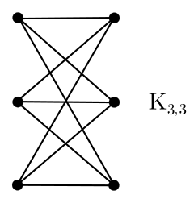
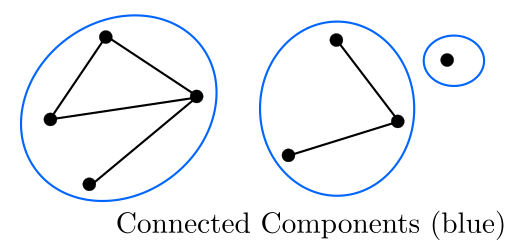

Contents
Sets
Introduction
Sets, denoted like \( S = \{a, b, c, ...\} \), contain unique elements. \[ \mathbb{N} \subseteq \mathbb{Z} \subseteq \mathbb{Q} \subseteq \mathbb{R} \]
The number of elements (cardinality) of a set \(A\) denoted \(|A| = n , n \in \mathbb{N}\).
Recall the such that notation (: or |). Recall the empty set \(\{\}, \varnothing\). If \(|D| = 1\), D is a singleton set.
Finite Sequences
Suppose \(A = \{a, b, c\}\). Then we denote \( A^2 = \{aa, ab, ac, ba, bb, bc, ca, cb, cc\} \), and \(A^n\) is the set of all ordered sequences of length \(n\) of elements in A. Ex. \(\mathbb{Z}^2\) is the set of ordered integer pairs (i.e. integer coordinates). Tuple brackets are usually kept on unless no ambiguity can be had without them on.
More on Sets
Let \( A = \{2, \{3, 4, 5\}, 6, \varnothing \} \). \( |A| = 4 \). We can say that \( A \not \subseteq B \equiv \exists x \in A : x \not \in B \). We also have \( A \varsubsetneq B \) which is an alternate syntax of \( A \subset B \), and means \( A \subseteq B \land A \neq B \). The empty set \( \varnothing \subseteq B, \forall B \).
Set ranges, let \( C = \{x \in \mathbb{R} : x \leq 5\} \) can also be denoted as \( C = (-\infty, 5] \) or the same using a semicolon vs a comma.
We can define the set operations as follows:
- \( A \cup B = \{x : x \in A \lor x \in B\} \)
- \( A \cap B = \{x : x \in A \land x \in B\} \)
- \( A \setminus B = \{x : x \in A \land x \not \in B\} \)
We can define symmetric difference as \( A \vartriangle B = (A \setminus B) \cup (B \setminus A) \).
Statement. \( (A \setminus B) \cup (B \setminus A) \) is the same as \( (A \cup B) \setminus (A \cap B) \).
Proof. We want to show that \( (A \setminus B) \cup (B \setminus A) \Longleftrightarrow (A \cup B) \setminus (A \cap B) \)
For the forward proof, let us take an arbitrary \( x \in (A \setminus B) \cup (B \setminus A) \). We have two cases:
\begin{align}
\textrm{(1) } x \in A \setminus B &\implies x \in A \\
&\implies x \in A \cup B. \\
x \in A \setminus B &\implies x \not \in B \\
&\implies x \not \in A \cap B \\
&\implies x \in (A \cup B) \setminus (A \cap B). \triangleright \\
\textrm{(2) } x \in B \setminus A &\implies x \in B \\
&\implies x \in A \cup B. \\
x \in B \setminus A &\implies x \not \in A \\
&\implies x \not \in A \cap B \\
&\implies x \in (A \cup B) \setminus (A \cap B). \triangleright \\
\end{align}
We have now proved the forward condition. For the backward proof, let us take an arbitrary element \( x \in (A \cup B) \setminus (A \cap B) \).
\begin{align}
&x \in A \cup B \\
&x \in A \cup B \implies x \in A \lor x \in B \\
&\textrm{if } x \in A \implies x \not \in B \textrm{ else contradiction as } x \in A \cap B \implies x \not \in (A \cup B) \setminus (A \cap B)\\
&\therefore x \in A \setminus B \\
&\textrm{if } x \in B \implies x \not \in A \textrm{ else similar contradiction} \\
&\therefore x \in B \setminus A\\
&\therefore x \in (A \setminus B) \cup (B \setminus A).
\end{align}
$$\tag*{$\Box$}$$
Set Operation Laws
We can trivially define the following:
-
Idempotence
\( A \cap A = A; A \cup A = A \)
Commutativity
\( A \cap B = B \cap A; A \cup B = B \cup A \)-
Associativity
\( (A \cap B) \cap C = A \cap (B \cap C) \), same works with \( \cup \). -
Distributivity (works both ways)
\( A \cap (B \cup C) = (A \cap B) \cup (B \cap C) \)
\( A \cup (B \cap C) = (A \cup B) \cap (B \cup C) \)
For negation, we need to do some defining. Set minus is not negation, since we need 2 sets for set minus. So suppose then we have a universal set \( S \). For any set \( A \subseteq S \), the complement of A relative to S is the difference, \( \bar{A} = S \setminus A \). Thus, \( \bar{\bar{A}} = A \).
We also can define De Morgan's law, as
\( \overline{A \cap B} = \bar{A} \cup \bar{B} \) and \( \overline{A \cup B} = \bar{A} \cap \bar{B} \).
We can then define the following, \begin{align*} &A \cap S = A \ &A \cup \varnothing = A \\ &A \cap \varnothing \ &A \cup S = S \\ &A \cap \bar{A} = \varnothing \ &A \cup \bar{A} = S \\ \end{align*} \[A \cap (A \cup B) = A = A \cup (A \cap B)\] The last of which is a theorem and deducible.
We have notation for when we want to perform an operation over many sets. This is similar to summation notation. \[ \bigcup^{n}_{i=1} A_i \] indicates that we want to perform set union on all sets A of index i to n. Similarly, for set intersection, we have \[ \bigcap^{n}_{i=1} A_i \]
Example 1. Let a set \( A_i = \{x \in \mathbb{Z} : x \geq i, i \in \mathbb{N}\}\) for some index i. Then, we can play around with some operations using these large operators. \begin{align*} &\bigcup_{i=1}^{\infty} A_i = A_1;\ &\bigcap_{i=1}^{\infty} A_i = \varnothing; \ &\bigcap_{i=1}^{n} A_i = A_n; \end{align*} More generally, for a set of indices \( I \), we can write \begin{align} \bigcup_{i \in I} A_i &= \{x : x \in A_i \textrm{ for some } i \in I\} \\ \bigcap_{i \in I} A_i &= \{x : x \in A_i \textrm{ for all } i \in I\} \\ \end{align} Note that the first is how \( \exists \) works, whilst the second is how \( \forall \) works.
Power Sets
Given a set S the power set is the set of all subsets of S.
Let \( S_1 = \varnothing \), then \( 2^{S_1} = \{\varnothing\} \)
Let \( S_2 = \{a, b\} \), then \( 2^{S_2} = \{\varnothing, \{a\}, \{b\}, \{a, b\}\} \)
And so on. All subsets of a set are elements of its power set.
A finite set gives a finite power set. If the cardinality of a set \( |S| = n \), the caridnality of its power set \( |2^{S}| = 2^{|S|} = 2^n \). This also shows why the power set notation is as thus.
Cartesian Products
Recall: for a set \( A, A^2 = \{(a_1, a_2) : a_i \in A, a_2 \in A\} \). Etc. for \( A^n \). The cartesian product for two sets, \( A \times B \), is defined similarly, as \( \{(a, b) : a \in A, b \in B\} \).
What happens when we take a cartesian product \( A \times \varnothing \)? Well, since \( \varnothing \) has 0 elements, if we look at the defnition the resulting set must have 0 elements, as we cannot have any ordered pairs, thus \( A \times \varnothing = \varnothing = \varnothing \times A \).
On associativity and commutativity, cartesian product is not commutative, as by switching around the sets we switch around the ordered pairs. On associativity, suppose \( (A \times B) \times C \). \begin{align} (A \times B) \times C &= \{(x, y) : x \in A \times B, y \in C\} \\ &= \{(x, y) : [x = (a, b):a \in A, b \in B], y \in C\} \\ &= \{((a,b),c): a \in A, b \in B, c \in C\} \\ \textrm{However } A \times (B \times C) &= \{(a,(b,c)): a \in A, b \in B, c \in C\} \textrm{ which is different. } \end{align} So cartesian product is not associative, either.
We can define \( A \times B \times C = \{(a,b,c) : a \in A, b \in B, c \in C\} \), and extrapolate for further product chains.
Note: Dimitry's philosophical ramblings for this topic are not included.
Propositional Logic
Introduction
- Boolean Functions
- Logical Propositions
- Laws of Propositional Logic
- Some Notation
- A Little Bit of Abstract Algebra
Propositions allow us to express statements which can be true or false. "Washington DC is the capital of the US" is a true proposition, whilst "2+2=5" is a false one.
Sentences like "What time is it?", "Read this carefully", are not propositions. "\(x+2=5\)" is not a proposition, but could be iff x was fixed beforehand.
Atomic propositions are propositions that cannot be broken down further, they are usually represented by a letter, \(p, q\).
Propositions can be compounded with logical operators \(\lnot, \land, \lor\). These are Negation, Conjunction, Disjunction respectively. Conjunction, \(P \land Q\) can also be written \(PQ\).
An implication, "if P then Q " or "P implies Q " is denoted \(P \implies Q\), and equals \(\lnot P \lor Q\).
Boolean Functions
For a set of boolean values \(B - \{T, F\}\), a boolean function is a function such that \(f : B^n \longrightarrow B\)
Example 1. Simple example for \(n=2\), let a function \(h_2 (x, y)\) be over this boolean set. We can construct a truth table for this function.
\begin{array} {|r|r|}\hline x & y & h_2 (x,y) \\ \hline F & F & F \\ \hline F & T & T \\ \hline T & F & T \\ \hline T & T & F \\ \hline \end{array}
In this case, the function is exclusive or, \(x \oplus y\).
Example 2. Construct the truth table for \((p \implies q) \land (\lnot p \implies r)\)
Answer 2. Note that \(p \implies q\) is \(\lnot p \land q\), we can do this incrementally. Let big Q be the output. \begin{array} {|r|r|}\hline p & q & r & p \implies q & \lnot p & \lnot p \implies r & Q \\ \hline F & F & F & T & T & F & F \\ \hline F & F & T & T & T & T & T \\ \hline F & T & F & T & T & F & F \\ \hline F & T & T & T & T & T & T \\ \hline T & F & F & F & F & T & F \\ \hline T & F & T & F & F & T & F \\ \hline T & T & F & T & F & T & F \\ \hline T & T & T & T & F & T & F \\ \hline \end{array}
Logical Propositions
Since \(\lnot p \lor q \equiv p \implies q\) (the proof of this is trivial), the propositions \(\lnot p \lor q\) and \(p \implies q\) are logically equivalent if the proposition \( \lnot p \lor q \Longleftrightarrow p \implies q\ \) (also written using \(\longleftrightarrow\)) is a tautology.
\(\Longleftrightarrow\) is the logical equivalence connector, which can be described with the following truth table: \begin{array} {|r|r|}\hline x & y & x \Longleftrightarrow y \\ \hline F & F & T \\ \hline F & T & F \\ \hline T & F & F \\ \hline T & T & T \\ \hline \end{array}
A tautology is a proposition that is true regardless of the values of its atomic propositions.
Laws of Propositional Logic
-
The associative and commutative laws
\((x \lor y) \lor z \equiv x \lor (y \lor z) \)
\(x \lor y \equiv y \lor x\)
Which also work with logical and. -
The identities,
\(x \lor F = x; x \land T = x\) -
The idempotent laws,
\( x \lor x = x, x \land x = x \) -
De Morgan's laws, which can be described as (1) negate the parts, (2) negate the whole expression, (3) switch the sign from or to and or vice versa.
\( a \land b \) to \( \lnot a \land \lnot b \) to \( \lnot (\lnot a \land \lnot b) \) to \( \lnot (\lnot a \lor \lnot b) \) - The not not, \(\lnot \lnot x = x\).
-
The excluded middle,
\(x \lor \lnot x = T; x \land \lnot x = F\) -
The absorption law,
\(x \lor (x \land y) = x\)
\(x \land (x \lor y) = x\) -
The distributive law (and is omitted)
\(x(y \lor z) = xy \lor xz\)
\( x \lor (yz) = (x \lor y)(x \lor z)\) -
Annihalation law,
\(x \lor T = T; x \land F = F\)
Proof. We can prove the absorption law (1) by using the distributive (2), annihalation (3), and identity (4) laws. \[x \lor (x \land y) \] \begin{align} \textrm{by (4) } &\implies (x \land T) \lor (x \land y) \\ \textrm{by (2) } &\implies x \land (T \lor y) \\ \textrm{by (3) } &\implies x \land T \\ \textrm{by (3) } &\implies x \\ \end{align} $$\tag*{$\Box$}$$
Some Notation
Logical AND can be \(\land, \&, \cdot\) or omitted entirely (like multiplication in algebra).
Negation can be done with \(\lnot\) or an overbar \(\bar{x}\).
The order of operation goes Not, And, Or.
True and false can also be represented as \(1, 0\).
A Little bit of Dimitry's Abstract Algebra
(skippable?)
We can define a structure \(\langle F, T, \land, \lor, \lnot \rangle\), the latter three being defined as your standard truth tables using F and T.
We can rewrite this structure as \( \langle 0, 1, min, max, \overline{\phantom{A}} \rangle \), where the overline is defined as "flip", and flips the bits. Min acts like or, and max acts like and, therefore this structure acts exactly the same as the previous, meanining they are isomorphic.
Logic of Predicates
Introduction
Predicates and Quantifiers
A predicate is a statement that can contain a variable, and is either true or false. For example, \(P_{1}(u)\) where u is the variable, which is in a domain, such as \(u \in \mathbb{Z}\).
Variables can be bound by quantifiers, \(\forall u\) and \(\exists u\).
Let the predicate \(P_{2}(u): u^2 - 1 = (u-1)(u+1)\), we can then construct sentences using quantifiers and predicates, \(\forall u \in \mathbb{Z}, P_{2}(u)\). For all integers u such that the predicate holds. This can be done without the domain if domain is implied, but this is usually not well defined.
Let \(P_{3}(u): u^2 = 9\). Then \(\forall u \in \mathbb{Z}, P_{3}(u)\) is false, since we can provide a counterexample.
A variable bound by a quantifier is called, well, a bound variable, whilst otherwise it is a free variable.
Note: \(\exists\) is usually used with a colon ("such that"), whilst \(\forall\) is not.
Predicates can be over multiple variables. Let \(P_{4}(x, y):(x^2 - y^2 = (x-y)(x+y)\). Then we can say \(\exists x \exists y : P_{1}(x,y)\) or \(\forall x \forall y , P_1 (x,y)\), which are both true.
Example 1. Let \(P_5 (x,y) : (x-1)^2 + (y-3)^2 = 0\).
We can say that \(\exists x \exists y : P_5 (x,y)\) is true (\(x=1, y=3\)), whilst \(\forall x \forall y : P_5 (x,y)\) is false, since we can find a trivial example in \(x=0, y=0\).
Example 2. Let \(q(u, v) : | u-v| = 1\).
For the sentence \(\forall u \exists v : q(u,v)\), we can say that this is true, since we can pick \(v=u+1\).
However the sentence \(\exists v : \forall u, q(u,v)\) is problematic, since there is an exception for the value of u for all values of v. So this is false.
(Dimitry's analogy) Sentences with quantifiers act like a game between 2 players. \(\exists\) wants to pick values of its variable for a true value, whilst \(\forall\) wants to pick values which are false.
Example 3. Let \(s(x,y): x<y\). Consider (1) \(\forall x \exists y : s(x,y)\) and (2) \(\exists y : \forall x, s(x, y)\). Which one is true and which one is false?
Answer 3. We can always pick a true value for every x, so (1) is true. However, for every value of x we can pick a false y, so (2) is false.
Example 4. Consider the predicate \(p(u, v)\) in the figure, which one of the following is true? (A) \(\exists v \exists u : p (u,v)\), (B) \(\forall u \forall v, p (u,v)\), (C) \(\forall v \exists u: p(v,u)\), (D) \(\exists u \forall v, p(v,u)\). \begin{array} {|r|r|}\hline u \backslash v & 1 & 2 & 3 & 4 & 5 & 6 \\ \hline A & F & F & F & T & T & F \\ \hline B & F & F & T & T & F & T \\ \hline C & T & T & F & T & F & F \\ \hline D & F & F & F & T & F & F \\ \hline \end{array}
Answer 4. For (A), \(p(A, 4)\) is true, so the sentence is true.
For (B), \(p(A, 1)\) is false, so the sentence is false.
For (C), note that u and v are switched round. However, variable names are really arbitrary, and \(\forall v \exists u: p(v,u) \equiv \forall u \exists v: p(u,v)\), since they are just labels at the end of the day. This is then saying tat for all rows there is a column that is true, which is true. So the sentence is true.
For (D), we need to be slightly more careful. Using u and v here may get confusing, since it clashes with the u and v used in the definition, so first let us write it in terms of other variables: \(\exists x \forall y, p(y,x)\). What this is saying is that "there exists a column, such that for all rows that column is true." Since column 4 is true, this sentence is true.
Predicate Laws of Logic
Let us have a set \(A = \{1, 2, 3, ..., n\}\). \(\forall x \in A, p(x)\) can be rewritten as a conjunction \(p(1) \land p(2) \land ... \land p(n)\) Likewise, \(\exists x \in A : p(x)\) can be rewritten as a disjunction \(p(1) \lor p(2) \lor ... \lor p(n)\).
Example 5. \(\forall x \exists y \in \{a, b, c\} : f(x, y)\) can be rewritten: \[\implies (\exists y : f(a,y)) \land (\exists y : f(b,y)) \land (\exists y : f(c,y)) \] \[ \implies (f(a,a) \lor f(a,b) \lor f(a,c)) \land ... \] and so on for all 9 values.
On the laws of quantifiers:
-
Basic laws,
\(\forall x, T \equiv T; \forall x, F \equiv F\)
which are true also for \(\exists\). -
Law of distribution
\(\forall x, (P(x) \land Q) \equiv (\forall x, P(x)) \land Q\)
Note that Q is a statement, which does not rely on a variable. Also true for \(\exists\) and \(\lor\). -
De Morgan's law applied to quantifiers,
\(\lnot (\forall x, P(x)) \equiv \exists x : \lnot P(x)\)
\(\lnot (\exists x : P(x)) \equiv \forall x, \lnot P(x)\) -
We can distribute quantifiers over predicates in certain cases.
\(\forall x, (P(x) \land Q(x)) \equiv \forall x, P(x) \land \forall x, Q(x)\) works,
However \(\exists x: (P(x) \land Q(x))\) cannot be expanded.
\( \exists x : (P(x) \lor Q(x)) \equiv \exists x : P(x) \lor \exists x : Q(x) \) works,
However \(\forall x: (P(x) \lor Q(x))\) cannot be expanded.
Sometimes, we want for a unique item to exist. Currently, \(\exists\) means "one or more", however a shorthand to say "exactly one" is \(\exists!\). This is formally defined as: \[ \exists! x \in S : P(x) = ( \exists x : P(x) ) \land \forall y \in S \forall x \in S, ( (P(y) \land P(z) ) \implies y = z \]
Proofs
Introduction
Direct Proof and Case Analysis
Direct proof is showing that for predicates P and Q, \( P \implies Q \).
Case by case analysis is by looking at all possible cases that could occur and proving a sentence true based on those.
Example 1. Suppose sets \( A, B \), prove that \( 2^A \subseteq 2^B \implies A \subseteq B \).
Proof 1. Take an arbitrary \( x \in A \). Then, \( \{x\} \in 2^A \).
Since \( 2^A \subseteq 2^B \), \( \{x\} \in B \), therefore \( x \in B \).
$$\tag*{$\Box$}$$
Example 2. Case by case analysis. Prove that \( 2^A \lor 2^B \subseteq 2^{A \cup B} \).
Proof 2. Consider an element \( x \in A \). Then \( \{x\} \in 2^A \).
Consider an element \( x \in A \cup B \). Then \( \implies \{x\} \in 2^{A \cup B} \). Additionally,
\begin{align}
&\implies x \in A \cup x \in B \\
&\implies \{x\} \in 2^A \cup \{x\} \in 2^B \\
&\implies \{x\} \in (2^A \cup 2^B) \textrm{ } \forall x. \\
&\implies (2^A \cup 2^B ) \subseteq 2^{A \cup B}.
\end{align}$$\tag*{$\Box$}$$
Example 3. Prove that \( f(n) = 1 + (-1)^n (2n-1) \) is a multiple of 4 \( \forall x \in \mathbb{Z} \)
We can of course take a few cases of n and see what we get. This is left to the reader.
Proof 3. We want to look at the cases where n is odd, and n is even.
If n is even, \( f(n) = 1 + 1 (2n-1) = 2n \). Suppose \( n = 2k, k \in \mathbb{Z} \), then \( f(n) = 2 \cdot 2k = 4k. \)
If n is odd, \( f(n) = 1 - (2n - 1) = 2-2n \). Suppose \( n = 2k-1, k \in \mathbb{Z} \), then \( f(n) = 2-2(2k-1) = 4k-4 = 4(k-1). \)
$$\tag*{$\Box$}$$
Contrapositives and Contradictions
To prove a claim \( P \implies Q \) by contrapositive, we want to prove the reverse \( \lnot Q \implies \lnot P \).
Example 4. Prove (or disprove) that \( 7x + 9 \textrm{ even } \implies x \textrm{ odd } \).
Proof 4. Assume that \( x \) is even. (This is \( \lnot Q \)) Then, \( x = 2m, \; m \in \mathbb{Z} \). Then, \begin{align} 7x + 9 &= 7 \cdot 2m + 9 \\ &= 2(7m + 4) + 1 \end{align} The result is odd, therefore \( 7x+9 \) is odd (This is \( \lnot P \)). This is a contrapositive, therefore the statement holds. $$\tag*{$\Box$}$$
Example 5. Prove that \( x^2 -6x +5 \textrm{ even } \implies x \textrm{ odd } \).
Assume the contrapositive, \( x \) being even. Then \( x = 2m, \; m \in \mathbb{Z} \). Then, \begin{align} x^2 -6x+5 &= 4m^2 -12m +4 \\ &= 2(2m^2 -6m +2) + 1 \textrm{ which is odd.} \end{align} This is a contrapositive, so we can conclude that the initial statement is true. $$\tag*{$\Box$}$$
Contradiction works similarly, but rather than trying to prove \( \lnot P \) from \( \lnot Q \), we set a statement to false, such as by assuming \( P \implies \lnot Q \) or \( \lnot X \) (for a standalone statement X), and then proving that this causes a contradiction.
Theorem 1. \( \sqrt{2} \not \in \mathbb{Q} \).
Proof. Assume the opposite, \( \sqrt{2} \in \mathbb{Q} \).
Therefore, \( \sqrt{2} = \frac{m}{n} \), where \( m, n \in \mathbb{Z} \) and \( m, n \) do not share common factors. Then,
\begin{align}
\sqrt{2}^2 &= 2 = \frac{m^2}{n^2} \\
&\implies 2n^2 = m^2 \\
&\implies 2n^2 \textrm{ is even, so } m^2 \textrm{ is even} \\
&\implies m \textrm{ is even.}
\end{align}
\( m = 2k, \; k \in \mathbb{Z} \).
\begin{align}
\therefore 2n^2 &= (2k)^2 = 4k^2 \\
\implies n^2 &= 2k^2 \\
\implies n^2 &\textrm{is even, so } n \textrm{ is even.}
\end{align}
This means that both \( m,n \) divisible by 2, which contradicts our original conditon that \( m,n \) share no common factors. Since this is a contradiction, \( 2 \not \in \mathbb{Q} \).
$$\tag*{$\Box$}$$
Nonconstructive Proof
A non-constructive proof is a proof which indirectly shows existence, without providing a specific example or algorithm for producing an example. [citation]
Theorem 2. \( \exists x, y \in \mathbb{R} \setminus \mathbb {Q} : x^y \in \mathbb{Q} \)
Proof. Consider \( a = \sqrt{2}^{\sqrt{2}} \), and \( b = \sqrt{2} \). Therefore, \( a^b = (\sqrt{2}^{\sqrt{2}}) ^ {\sqrt{2}} = \sqrt{2}^2 = 2\).
However, we do not know whether \( a \in \mathbb{R} \setminus \mathbb{Q} \). If this is true, then we have an example with \( a,b \). If, however, \( a \in \mathbb{Q} \), then we can set \( x=y=\sqrt{2} \), which will make \( a \), therefore we still have a true example.
$$\tag*{$\Box$}$$
Logic in Proof
Logic is used a lot in proof, and many examples can be reduced to simply propositional logic. For example, we can prove a paragraph of prose with propositional logic.
Example 6. Prove or disprove:
The meeting can take place if all members have been informed in advance, and it is quorate. It is quorate provided that there are at least 15 members present, and members will have been informed in advance if there is not a postal strike. Therefore, if the meeting was cancelled, there were fewer than 15 members present, or there was a postal strike.
Proof 6. Given this piece of prose, we can introduce the following propositional variables corresponding to sections in the prose (which are marked in bold.
\begin{align}
m &: \textrm{the meeting takes place.} \\
a &: \textrm{all members have been informed in advance.} \\
f &: \textrm{15 or more members present.} \\
q &: \textrm{meeting is quorate.} \\
p &: \textrm{there is a postal strike.} \\
\end{align}
Therefore the first sentence describes (X) \((a \land q) \implies m \).
The second sentence describes (Y) \(f \implies q \) and (Z) \(\lnot p \implies a \).
The third sentence describes (W) \( \lnot m \implies \lnot f \lor p \), which is what we want to verify is a logical consequence of the first three predicates. This is saying, \( X \land Y \land Z \implies W \)? (recall for the following that \( p \implies q \equiv \lnot p \lor q \)).
We can do this by trying to verify if \( X \land Y \land Z \land \lnot W \) is false.
\begin{align}
X \land Y \land Z \land \lnot W &\equiv ((a \land q) \implies m) \land (f \implies q) \land (\lnot p \implies a) \land \lnot m \land \lnot (\lnot f \lor p) \\
&\equiv (\lnot a \lor \lnot q \lor m) \land (\lnot f \lor q) \land (p \lor a) \land \lnot m \land f \land \lnot p
\end{align}
Note that de Morgan's law was applied to \( \lnot (\lnot f \lor p) \). Once we have everything in this mode we can use modus ponens to resolve this down.
\[ (\lnot a \lor \lnot q \lor m) \land (\cancel {\lnot f} \lor q) \land (\cancel {p} \lor a) \land \lnot m \land f \land \lnot p \]
\[ (\lnot \cancel{a} \lor \cancel{\lnot q} \lor m) \land q \land a \land \lnot m \land \lnot p \]
\[ m \land q \land a \land \lnot m \land \lnot p \]
Note that here we have \( m \land \lnot m \), which will evaluate to false, making the whole expression false. Since this is the opposite expression, we can say that the original reasoning is correct.
$$\tag*{$\Box$}$$
Modus Ponens. Simply, given that \( x \) holds, and \( x \implies y \), then \( y \) holds. This can also be expressed as in the case \( x \land (y \lor \lnot x) \equiv x \land y \). This also works the other way around, \( \lnot x \land (x \land y) \equiv \lnot x \land y \).
(The proof is trivial and left as an excersise to the reader.)
Example 7. Given the following predicates, based on the variables \( r,c,l,n,t \), prove or disprove \( X \land Y \land Z \implies W \). \begin{align} &(X) &r \implies (c \lor l) \\ &(Y) &\lnot c \implies \lnot n \\ &(Z) &\lnot t \implies \lnot l \\ &(W) &r \implies (n \lor t) \end{align}
Proof 7. Let us assert a contradictory statement, \( X \land Y \land Z \land \lnot W \). \[ (r \implies (c \lor l)) \land (\lnot c \implies \lnot n) \land (\lnot t \implies \lnot l) \land \lnot (r \implies (n \lor t)) \] Converting implications to more elemnentary boolean operations, and using modus ponens, as well as using de Morgan's law on \( W \)... \[ ( \cancel{\lnot r} \lor c \lor l) \land (c \lor \lnot n) \land (\cancel{t} \lor \lnot l) \land r \land \lnot n \land \lnot t \] \[ (c \lor \cancel{l}) \land (c \lor \lnot n) \land \lnot l \land r \land \lnot n \land \lnot t \] \[ c \land (c \lor \lnot n) \land \lnot l \land r \land \lnot n \land \lnot t \] Note that if \( c = r = T \) and \( l = n = t = F \), this whole expression will resolve to true. Since this is the case, the counter statement has been resolved, therefore the original statement is false. $$\tag*{$\Box$}$$
Relations
Introduction
Definition. Given sets \( A, B\) a relation \( R \) between \( A,B \) is denoted \( R \subseteq A \times B \).
If \( A=B \), a relation is said to be on \( A \).
There are a lot of freedoms with relations, and how large they are. An empty relation is \( R = \varnothing \), whilst a total relation is \( R = A \times B \).
Example 1. Let \( \mathbb{Z} = A = B \). The equality relation is a relation described as \( R = \{(x,y) \in \mathbb{Z} \times \mathbb{Z} : x = y\} \).
Example 2. An inequality relation on the integers is denoted \( R = \{(x,y) \in \mathbb{Z} \times \mathbb{Z} : x \leq y\} \).
Definition. The inverse of a relation \( R \subseteq A \times B \) is denoted \( R^{-1} \), where \( R^{-1} = \{(b,a) \in B \times A : (a,b) \in R \} \) This is a relation from B to A.
Example 3. Let us define \( R = \{(x,y) \in \mathbb{Z} \times \{0, 1\}: x \textrm{ has remainder } y \textrm{ mod } 2\} \). In this case, all tuples \( (x,0) \) are even \( x \)s, whilst all tuples \( (x, 1) \) are odd \( x \)s.
Since relations are sets themselves, therefore we can also perform set operations on relations, such as \( R_1 \cup R_2 \), \( R_1 \cap R_2 \), \( R_1 \setminus R_2 \).
Example 4. Relations can be abstract or concrete. Take a set \( P \) of people, we can define a relation over the set of people as \( R = \{(x,y) \in P^2 : x \textrm{ is a child of } y\} \).
Since relations can either hold or not for elements from a sets, relations can also be thought of as predicates. For example, for relation \( R, \; R(x,y) \) is the predicate. If \( R(a,b) : a \in A , b \in B \) then the pair \( (a,b) \in R \).
Instead of writing \( (a,b) \in R \), which may be tedious, one can simply write \( aRb \) where R is the relation, or can be replaced with the denotation of the relation. For example, for a relation \( R_{\leq} \), we can write \( (a,b) \in R_{\leq} \), \( (a,b) \in \leq \), or more commonly \( a \leq b \).
Definition. Suppose \( R, Q \) are relations, \( R \in A \times B \) and \( Q \in B \times C \), the composition of \( R, Q \) is the relation \( R \circ Q = \{ (a,c) \in A \times C : \exists b \in B : (a,b) \in R, (b,c) \in Q \} \).
Example 5. Take the relation from example 4. What if we compose \( R \) with \( R \)?
\( R \circ R \) describes all persons \( a, c \) where there is a person \( b \) sich that \( a\) is a child of \( b \) and \( b \) is a child of \( c \). Or, more succinctly, \( a \) is a grandchild of \( c \).
Properties of Relations
Considering a relation R on set S:
Definition. A relation is REFLEXIVE if \( aRa \; \forall a \in S\).
Definition. A relation is SYMMETRIC if \( aRb \implies bRa \l \forall a,b\in S \).
Definition. A relation is ANTISYMMETRIC if \( aRb \land bRa \implies a = b\).
Definition. A relation is TRANSITIVE if \( \forall (a, b, c), \; aRb \land bRc \implies aRc \).
Let us take the following relations, \( (1), (2), (3), (4)\) (of which the first two, and the last come from prior examples). \begin{align} (1) \; &R = \{(x,y) \in \mathbb{Z}^2 : x=y\} \\ (2) \; &R = \{(x,y) \in \mathbb{Z}^2 : x \leq y\} \\ (3) \; &R = \{(x,y) \in \mathbb{Z}^2 : x-y \textrm{ is even}\} \\ (4) \; &R = \{(x,y) \in P^2 : x \textrm{ is a child of } y\} \end{align}
Relation (1) is reflexive, symmetric, antisymmetric and transitive.
Relation (2) is reflexive, antisymmetric, and transitive, but not symmetric. Try find a counterexample in the not case.
Relation (3) is reflexive, symmetric, and transitive, but not symmetric. Try to find a counterexample.
Relation (4) is not reflexive. No one can be a child of themself.
Relation (4) is also not symmetric. A parent cannot be a child of their own child.
Relation (4) is not transitive. If \( a \) is the child of \( b \), and \( b \) is the child of \( c \), then \( a \) is the grandchild, and not child, of \( c \)
How about for antisymmetry of (4)? Does \( a \) being a child of \( b \), and \( b \) being a child of \( a \), imply that \( a \) is \( b \)? The problem here is, there is no pair \( a,b \) possible for this, so \( aRb \land bRa \) is always false. Since false always implies true, (4) is antisymmetric.
Definition. A relation is an equivalence relation if it is reflexive, symmetric, and transitive.
Definition. A relation is a partial order relation if it is reflexive, antisymmetric, and transitive.
Equivalence Relations
Let a set \( S \) have an equivalence relation \( R \).
Definition. \( \forall a \in S \), the notation \( [a] \) or \( [a]_R \) denotes the equivalence class generated by \( a \) with respect to \( R \).
Where \( [a] = \{x \in S : a R x\} \). All elements \( x \) in the set \( S \) which are related to \( a \).
Example 6. Take the relation of equality over \( \mathbb{Z}\). The equivalence class of some number, such as 5, are all the numbers equal to 5. \( [5] = \{5\} \).
Example 7. Take a more complicated relation over \( \mathbb{Z} \), being congruence mod 2 (\( x-y \) is even). What is \( [5] \) now?
\( [5] \) is the set of all integers where \( 5-x \) is even. So \( [5] = \{5, -5, 3, -3, 1, -1, 7, -7, ...\} \).
How about \( [7] \)? \( [7] = \{7, -7, 5, -5, 3, -3, 1, -1, 9, -9, ...\} = [5]\). This suggests that the equivalence classes of all odd integers is ... the odd integers.
Similarly \( [0] = \) all even integers.
The union of all equivalence classes will get the original whole set.
Lemma 1. Any element from \( [a] \) is a representation of \( [a] \). This is saying that \( \forall b \in [a], \; [b] = [a] \).
Proof. let us have a relation \( R \) over a set \( S \) where our elements come from.
- Because R is symmetric, \( aRb \implies bRa \implies a \in [b] \).
- To then show that \( [a] \subseteq [b] \), let us first take some \( c \in [a] \). This means that \( aRc \; \forall c \).
- Since we also establish that \( bRa \), by transitivity of R \( bRc \; \forall c \).
- Therefore \( c \in [b] \), and hence \( [a] \subseteq [b] \).
- The reverse logic also works, because of symmetry, therefore we can also say that \( [b] \subseteq [a] \).
Thus \( [a] = [b] \) as required. $$\tag*{$\Box$}$$
Lemma 2. \( \forall a,b \in S \) either \( [a] \cap [b] = \varnothing \) xor \( [a] = [b] \).
Proof. Suppose \( \exists c \in [a] \cap [b] \). Hence \( c \in [a] \implies [a] = [c] \) by Lemma 1.
Also, \( c \in [b] \implies [b] = [c] \). Therefore, \( [a] = [b] \).
If there is no \( c \) where that is the case, then by definition \( [a], [b] \) are disjointed.
$$\tag*{$\Box$}$$
Let us now talk about indexing. Suppose \( I \) is a set of indices. Suppose \( \forall i \in I \), \( A_i \) is a set. e.g. \( I= \{1, 2\} \implies A_1, A_2 \).
Definition. Sets \( (A_i)_{i \in I} \) form a partition of a set B if \( \bigcup_{i \in I} A_i = B \) and \( A_i \cap A_j = \varnothing \; \forall i,j \in I, \; i \neq j \). Each A has no elements in any other A, and the "sum" (union) of all As form B.
This "disjointed union" can be denoted \( A_1 \sqcup A_2 \), and as big cup notation as \( \bigsqcup_{i=0}^{\infty} A_i \). This is not completely standard but useful.
Theorem. Every equivalence relation \( R \) on \( S \) partitions \( S \) into disjointed equivalence classes.
To prove this, let us first define the set of all equivalence classes (the quotient) of a set as the following:
Definition. The quotient of S with respect to R is denoted \( S / R = \{[a]_R : a \in S\} \).
Proof. \( \forall [a], [b] \in S / R, \) \( [a] \cup [b] = \varnothing \) unless \( [a] = [b] \) (From Lemma 2).
\( \bigcup_{A \in S/R} A \subseteq S \), but \( \forall x \in S, \) \( x \in [x] \in S/R \). Therefore, \( \bigcup_{A \in S/R} = S \).
$$\tag*{$\Box$}$$
The following are some examples for set quotient, since it may be a little confusing.
Example 8. Let \( S = \mathbb{Z} \). Let a relation \( E = \{(x,x) : x \in \mathbb{Z}\} \)
The quotient \( \mathbb{Z}/E = \{\{x\} : x \in \mathbb{Z}\} \), since E being equivalence generates singleton equivalence classes.
Let another relation \( T = \{(x, y) : x, y \in \mathbb{Z}\} \). This is essentially saying that all integers are related to each other. Here, there is only one equivalence class, so the quotient \( \mathbb{Z} / T = \{\mathbb{Z}\} \), where also \( \mathbb{Z} = [0]_T \).
Example 9. Let a relation \( R_m \) on \( \mathbb{Z} = \{(x,y) : x - y \textrm{ is divisible by } m\}\), congruence mod m, for some constant m.
Let us denote the quotient \( \mathbb{Z} / R_m \equiv \mathbb{Z}_m = \{[0]_{R_m}, [1]_{R_m}, ... , [m-1]_{R_m}\} \), which we can call the residue classes mod m.
Note that because of the modulo, \( [m] = [0], ... \)
Consider the case where \( m = 12 \). Then, the equivalence classes will be \( \{[0], [1], [2], ..., [11]\} ... [12] = [0] ... \) This is like hours on the clock.
It is still meaningful to talk about operations over these quotient sets, such as addition, which can be defined as a function \( + : \mathbb{Z} \times \mathbb{Z} \longrightarrow \mathbb{Z} \). This is compatible over \( R_m \), as we can simply do things like \( 11 + 5 = 4 \).
Example 10. let a set \( S = \mathbb{Z} \times \mathbb{Z} \setminus \{0\} \). Let a relation \( R \) over \( \mathbb{Z} \) be \( R = \{((a, b), (c, d))\} : ad = bc \)
For example, take the pairs \( (3, 6), (21, 42) \). Since \( 3 \cdot 42 = 6 \cdot 21 \), (out * out = in * in), these two pairs belong to the relation R. What this can represent is a ratio: \( \frac{3}{6} = \frac{21}{42} \).
Therefore, what is then the quotient \( S / R \)? This represents the set of all equivalence classes of S, which in this case means all equivalent ratios, where the denominator is not 0. Thus, \( S/R = \mathbb{Q} \).
Functions
Introduction
A function \(f: X \longrightarrow Y\) is (generally) a rule that assigns each element of \(x \in X\) to an unambiguous element \(y \in Y\).
Note the \(f: X \longrightarrow Y\) (set) notation and \(x \longmapsto f(x)\) (mapping to an image).
Example 1. Suppose we have the functions \( f_{1}(x) = 1/x, f_{2}(x) = \sqrt{x}, f_{3}(x) = \pm \sqrt{x^{2} + 1} \). Which one of these is \(f: \mathbb{R} \longrightarrow \mathbb{R}\)?
Answer 1. None of them. \(f_1\) can be represented \(f_1 :\mathbb{R}_{>0} \longrightarrow \mathbb{R}_{>0} \), similarly \(f_2 :\mathbb{R}_{>0} \longrightarrow \mathbb{R}_{>0} \) or \(f_2 :\mathbb{R}_{\geq 0} \longrightarrow \mathbb{R}_{\geq 0} \).
\(f_3\) has a bigger problem, as it returns two values.
That makes it not a function, but we can solve this by putting the values in an ordered tuple, such that \( f_{3} (x) = (\sqrt{x^2 + 1}, -\sqrt{x^2 + 1}) \). Then it would be \(f_3 :\mathbb{R} \longrightarrow \mathbb{R}^2 \).
We can define functions more explicitly by use of set theory.
Definition. A relation \( R \subseteq X \times Y \) is a function \( f : X \longrightarrow Y \) if \( \forall x \in X \; \exists ! y \in Y : xRy \).
In english, this says that a function is a relation where each element in X is mapped onto an element in Y.
\( f(x) \) is the value of \( f \) at \( x \), or is the image of \( x \).
If \( y = f(x) \), \( x \) is a pre-image of \( y \).
The complete pre-image of\( y \in Y \) (by f) is denoted \( f^{-1}(y) = \{x \in X : f(x) = y\} \).
The range of f is the set \( f(X) = \{f(x) : x \in X\} \).
Note: this notation, f(set), can be used to refer to any \( A \subseteq X \) where \( f(A) = {f(a) : a \in A} \).
Functions can have inverses. However, only certain functions can be inverted. The inverse of a function \( f : X \longrightarrow Y\) is denoted \( f^{-1} : Y \longrightarrow X\). However, a function can only have an inverse function if every element in the co-domain maps onto one element of the domain only. We can make a function invertible by restricting the domain, but that comes later.
The identity function \( \textrm{id}_A : A \longrightarrow A \) where \( \textrm{id}_{A} (a) = a \), is naturally invertible. The function \( f(x) = x^2 \), however, is not invertible over \( \mathbb{R} \), is invertible over \( \mathbb{R}^+ \), and is not invertible over \( \mathbb{Z}^+ \).
Below are some examples of functions (and not functions) as relations.
Example 2. Let a relation \( T \subseteq \mathbb{R} \times \mathbb{R} \). Therefore, \( T = \{(u, u^2) : u \in \mathbb{R}\} \). T here is a function, since there is a unique mapping of \( u \).
Example 3. Let a relation \( T' \subseteq \mathbb{R} \times \mathbb{R} \), where \( T = \{(u^2, u) : u \in \mathbb{R}\} \). This new T is not a function, since there is no \( (u^2, u) \in T : u^2 = -1 \) for a real \( u \). This is a counterexample.
Example 4. So let a relation \( T'' \subseteq \mathbb{R}_{\geq 0} \times \mathbb{R} \), where \( T = \{(u^2, u) : u \in \mathbb{R}_{\geq 0} \). Is ths now a function?
Answer 4. No. Whereas it is true that \( \forall x \in \mathbb{R}_{\geq 0} \; \exists y \in R : (x, y) \in T'' \), this is not a unique mapping. If \( x = 4 \), both \( (4,2) \) and \( (4, -2) \) are part of \( T'' \).
Example 5. Fine, let a relation \( T''' \subseteq \mathbb{R}_{\geq 0} \times \mathbb{R}_{\geq 0} \), where \( T = \{(u^2, u) : u \in \mathbb{R}_{\geq 0} \). This, finally, is a function, the "arithmetic square root". \( f(x) = \sqrt{x} \)
Restriction and Composition
Restrictions are useful to be considered, either to make a relation into a function, or to discard unnecessary information.
Let's define some sequences for functions. First, let an \( n \in \mathbb{Z}^+ \), and \( A \) be a set.
Let us say that \( A^n \) is the set of all functions from an "n-set", \( \{1, 2, 3, ..., n\} \).
Consider any function \( f : \{1, 2, ..., n\} \longrightarrow A \). The values \( f(1), f(2), ..., f(n) \) are all elements of \( A \). Now, the ordered tuple \( (f(1), f(2), ..., f(n)) \in A \). More generally, let us denote the set of all \( f: B \longrightarrow A \) as \( A^B \).
Example 6. Let a set \( X = \{CS118, CS126, CS130, CS131\} \), and \( Y = \{1, 2, 3\} \)
Consider an \( R \subseteq X \times Y : (x, y) \in R \textrm{ iff module x taught in term y}\). Therefore, we get that:
- \( (CS118, 1) \in R \)
- \( (CS126,2) \in R \)
- \( (CS130, 1) \in R \)
- \( (CS131, 2) \in R \)
However, this function will fail if \( CS133 \in X \), since CS133 is taught in terms 1 and 2.
Definition. If \( f : X \longrightarrow Y \) and \( X' \subseteq X \), then \( \left.{f}\right\vert_{X'} = \{(x, f(x)) : x \in X'\}\), which is called the restriction of \( f \) to \( X' \).
As mentioned prior, it is simple to restrict the domain. However, when restricting the co-domain, one must be really careful not to accidentally remove mappings which exist and matter.
Take relations\( R \subseteq A \times B, \; Q \subseteq B \times C \), the composition \( R \circ Q \) is \( a \mapsto c \) such that \( a \mapsto b \mapsto c \). If \( R, Q \) are functions, then:
Theorem 1. If \( f : X \longrightarrow Y \) and \( g : Y \longrightarrow Z \) are functions, then we have a relation \( f \circ g \subseteq X \times Z \) which is also a function. Also, \( (f \circ g)(x) \equiv f(g(x)) \).
Properties of Functions
There are some very important definitions coming up. Note that these all are for a function \( f : X \longrightarrow Y \).
Definition. A function is INJECTIVE (one-to-one) if \( \forall x_1 , x_2 \in X, \; x_1 \neq x_2 \implies f(x_1) \neq f(x_2) \). "No two+ \( x \) matches to the same \( y \)"
Defintion. A function is SURJECTIVE (onto) if \( \forall y \in Y \exists x \in X : f(x) = y \). "No \( y \) is left unmatched"
Definition. A function is BIJECTIVE (one-to-one correspondence) if it is injective and surjective.
Functions of these types are called injections, surjections, and bijections respectively.
Theorem 2. A function \( f : X \longrightarrow Y \) is bijective if and only if the inverse relation \( f^{-1} \subseteq Y \times X \) is a function. \( f^{-1} = \{(y,x) : y \in Y, x \in X, y = f(x)\} \).
Proof. We need to prove 2 things, sufficiency \( \Longleftarrow \) and necessity \( \Longrightarrow \).
(\( \Longleftarrow \)): "If the inverse is a function, then the function is bijective":
\( f \) is surjective, since we assume the inverse is a function, all Y mapped.
\( f \) is also injective, since if we assume the opposite, that some \( (x_1, y), (x_2, y) \in f \), then the inverse \( f^-1 \) is not a function, which breaks our condition for sufficiency. Therefore, \( f \) is bijective. \( \triangleright \)
\( (\Longrightarrow) \): "If the function is bijective, the inverse is a function":
When \( f \) is bijective, \begin{align} &\forall y \in Y \exists ! x \in X : (x, y) \in f \\ = &\forall y \in Y \exists ! x \in X : (y, x) \in f^{-1} \end{align} Which is just writing that the inverse \( f^{-1} \) is a function.
Thus completes the proof.$$\tag*{$\Box$}$$
Example 7. Show that if a function \( f : X \longrightarrow Y \) is bijective, then \( f^{-1} \) is also bijective.
Proof 7. \( f^{-1} \subseteq Y \times X \), with \( f^{-1} = \{(y,x) : y \in Y, x \in X, y = f(x)\} \) which by theorem 2 is a function.
If \( \forall x \in X \exists ! y \in Y : (x, y) \in f \) (Definition of a function), then we can write this equivalently as \( \forall y \in Y \exists x \in X : f(x) = y \).
Then, \( \forall y \in Y \exists ! x \in X : f(x) = y \) since \( f \) is bijective, which means that \( (y, x) \in f^{-1} \), which means \( f^{-1} \) is injective.
Because \( f \) is bijective, also \( \forall x \in X \exists ! y \in Y : f(x) = y \), which can be written as \( \forall x \in X \exists ! y \in Y : (y, x) \in f^{-1} \). Therefore, \( f^-1 \) is surjective.
Because \( f^-1 \) is both injective and surjective, it is thus bijective. $$\tag*{$\Box$}$$
Set Cardinality
Introduction
Definition. Sets \( A, B \) are equinumerous if there is a bijection \( f : A \longrightarrow B \). The notation for this is \( A \cong B \).
Let's take a set \( F_n = \{x \in \mathbb{N} : x < n\} \), such that \( F_0 = \varnothing, \; F_1 = \{0\}, \; F_2 = \{0, 1\}, \) etc. We can say that the cardinality of F, \( |F_i| = i \). Basically it's how many items are in the set.
\( F_i \not \cong F_j \) if \( i \neq j \).
Let us now take an arbitrary set \( S \). Take \( A \in 2^S, \; B \in 2^S \). Therefore, \( A \subseteq S, \; B \subseteq S \). Does \( A \cong B \)?
This can be formed into a relation, \( E(S) = \{(A, B) : A \in 2^S, B \in 2^S, A \cong B\} \). Now, is this an equivalence relation?
Yes! It is reflexive, \( A \cong A \), because we can map \( \forall a \in A \) onto itself.
If \( A \cong B \) then \( B \cong A \), because by definition there exists a bijective \( f : A \longrightarrow B \), which means there exists a bijective inverse \( f^{-1} : B \longrightarrow A \)
It is transitive, as if \( A \cong B \) and \( B \cong C \) then we can compose bijective functions such as to make \( A \cong C \). Therefore \( E(s) \) is an equivalence relation on \( 2^S \)
Consider the set \( 2^S / E(s) \) of equivalence classes. However, since \( F_i \not \cong F_j \), \( 2^S / E(S) \) denote cardinalities, and can represent the set of natural numbers, \( \mathbb{N} \).
Theorem 1. The set \( \mathbb{N} \setminus \{0\} \) is countably infinite. This means that \( \mathbb{N} \setminus \{0\} \cong \mathbb{N} \).
Proof 1. To prove, we want to find a bijective function \( f : \mathbb{N} \setminus \{0\} \longrightarrow \mathbb{N} \).
Simply, we can let this function be \( f(x) = x - 1 \).
This is both injective, as \( x-1 = x' - 1 \implies x = x' \), and surjective, as \( \forall Y \in \mathbb{N}, x-1 = y \implies y = x + 1 \). Therefore, since we have found a bijective mapping, \( \mathbb{N} \setminus \{0\} \cong \mathbb{N} \). $$\tag*{$\Box$}$$
Theorem 2. The set \( E = \{x \in \mathbb{N} : x \textrm{ even}\} \) is countably infinite.
Proof 2. We need to find a bijection \( f : E \longrightarrow \mathbb{N} \). Thus, \begin{align} x \in E &0, 2, 4, 6, 8, ... \\ y \in \mathbb{N} &0, 1, 2, 3, 4, ... \\ \end{align} We can let \( f(x) = \frac{x}{2} \), which is a bijective function. (The graph of this function is strictly increasing.) $$\tag*{$\Box$}$$
Proof 2. alternative. We can write a small algorithm to enumerate this bijection.
print(\( i, 2i \))
$$\tag*{$\Box$}$$
Theorem 3. \( \mathbb{Z} \) is countably infinite.
Proof 3. Let us first check some values. We can map positive integers to odd numbers, and negative numbers to even numbers. \begin{array} {|r|r|}\hline \mathbb{Z} & -3 & -2 & -1 & 0 & 1 & 2 & 3 \\ \hline \mathbb{N} & 6 & 4 & 2 & 0 & 1 & 3 & 5 \\ \hline \end{array} We can write this then as a function: \[ f(x) = \begin{cases} 2x-1 &x > 0 \\ -2x & x \leq 0 \end{cases} \] Or, we can do this programmatically, as the following:
for \( j \in \mathbb{N} \setminus \{0\} \):
\( i = i + 1 \)
print(\( i, j \))
\( i = i + 1 \)
print(\( i, -j \))
$$\tag*{$\Box$}$$
Theorem 4. \( \mathbb{Z}^2 \) is countably infinite.
Proof 4. You can think about enumerating this set as going round in a spiral following the integer coordinates, starting from \( (0,0) \). We can write an algorithm for this.
print(\( t, (x, y) \))
\( t \)++
while True:
for \( j \) in range \( [1, i] \):
\( x\)++
print(\( t, (x, y) \)); \( t \)++;
for \( j \) in range \( [1, i] \):
\( y \)++
print(\( t, (x, y) \)); \( t \)++;
\( i \)++
for \( j \) in range \( [1, i] \):
\( x \)--
print(\( t, (x, y) \)); \( t \)++;
for \( j \) in range \( [1, i] \):
\( y \)--
print(\( t, (x, y) \)); \( t \)++;
\( i \)++
Corrolary. \( \mathbb{Q} \) is countable.
Proof. We know that \( \mathbb{Q} = \mathbb{Z}^2 / R \), where \( R \) is the equivalence relation. (This was seen earlier in the relations section.) Since we know from theorem 4 that there are countably many pairs in \( \mathbb{Z}^2 \), there has to be countably many equivalence classes, thus countably many rational numbers in \( \mathbb{Q} \). $$\tag*{$\Box$}$$
Uncountable Sets
We know that \( \mathbb{N} \subseteq \mathbb{Z} \subseteq \mathbb{Q} \subseteq \mathbb{R} \). The first three are countable, and have the same cardinalty. But \( \mathbb{R} \)? Not quite. This section is a proof of the statement that \( \mathbb{R} \) is uncountably infinite.
Theorem 5. For some set \( S \), sets \( S, 2^S \) are not equinumerous. Thus, there is no bijective function \( f : S \longrightarrow 2^S \).
Proof. Consider a set \( A = \{x \in S : x \not \in f(x)\} \). Thus \( A \subseteq S \), which means \( A \in 2^S \).
Let us try a proof by contradiction, so we assume that said bijection \( f \) does exist.
If \( f \) is surjective, for \(A \in 2^S \exists y \in S : f(y) = A\). Now we ask: is \( y \in A \)? \begin{align} (1) \; y \in A &\implies y \in f(y) \implies y \not \in A &\textrm{contradiction.}\\ (2) \; y \not \in A &\implies y \not \in f(y) \implies y \in A &\textrm{contradiction.} \end{align}
This means that \( f \) can't be a bijection, and thus \( S, 2^S \) are not equinumerous. $$\tag*{$\Box$}$$
Proof aside, with finite sets it's elementary to see \( |2^{S}| > |S| \). But what about infinite sets?
Recall that for sets \( A, B \), the notation \( B^A = \{f : A \longrightarrow B\} \). If \( B = \{0, 1\} \), then \( \{0, 1\}^A = \{f : A \longrightarrow \{0, 1\}\} \).
Let us suppose that \( A = \mathbb{N} \)
Lemma 1. There is a bijection \( g : \{0, 1\}^{\mathbb{N}} \longrightarrow 2^{\mathbb{N}} \).
Proof. Consider a function \( t \in \{0, 1\}^{\mathbb{N}} \). \( t : \mathbb{N} \longrightarrow \{0, 1\} \).
Define \( g(t) = \{n \in \mathbb{N} : t(n) = 1\} \in 2^{\mathbb{N}} \).
\( g \) is injective: if we have a different \( t_1, t_2 : \exists n \in \mathbb{N} : t_1(n) \neq t_2(n) \), we have that \( g(t_1) \neq g(t_2) \). This is because \( t(n) \) can either be 0 or 1, but not both. Therefore exactly one of them can contain \( n \).
\( g \) is surjective: for some \( a \subseteq \mathbb{N} (A \in 2^{\mathbb{N}}) \), we define: \[ t_A (n) = \begin{cases} 1 &n \in A \\ 0 &\textrm{otherwise} \end{cases} \] Then we ask: what is \( g(t_A) \)? In fact, \( g(t_A) = A \). So, for all elements in the codomain, there exists a domain that is mapped onto. Therefore, \( g \) is bijective. $$\tag*{$\Box$}$$
We know that \( 2^{\mathbb{N}} \not \cong \mathbb{N} \), by theorem 5. Therefore, \( 2^{\mathbb{N}} \) is not countably infinite, but it is still inifite, so it is uncountably infinite. There are also uncountably many elements in \( \{0, 1\}^{\mathbb{N}} \).
Take \( [0, 1) \) which is defined as \( \{x \in \mathbb{R} : 0 \geq x <1\} \). We can take an infinite string of zeros and ones, and represent it as a fixed point binary digit, with the point after the first digit: \[a = 0.0111010110...\]
Let \( \{0, 1\}^{\mathbb{N}} / R \) where \( R \) is the equivalence relation, and this gets us a representation of \( \mathbb{R} \), therefore,
\( \mathbb{R} \) is uncountable. $$\tag*{$\Box$}$$
Note: if there is any confusion ask Dimitry.
Graphs
Introduction
Graphs as Relations
First, let us say that a relation which is irreflexive is the opposite of reflexive, that is for a relation \( R \), \( \forall a \in A, \; \lnot (aRa) \)
Definition. A graph is an ordered pair \( G = (V, E) \), where:
\( V \) is a set of vertices, with \( |V| < \infty \), and \( E \) is a collection of edges (vertex pairs).
Note that a collection allows duplicates of the same object, since it is useful to have that sometimes.
Graphs are either Directed or Undirected
In a directed graph (digraph), E must strictly contain ordered pairs. In an undirected graph, \( (u, v) = (v, u) \) and so one can think rather of a collection \( \{u, v\} \in E \).
Vocabulary. For an edge \( (u, v) \), \( u \) is the source, or initial vertex, and \( v \) is the destination, or terminal vertex.
A Loop is represented \( (u, u) \), i.e. a vertex connecting to itself.
Edges \( \{u, v\} \) and \( \{v, u\} \) are parallel, but directed edges \( (u,v) \) and \( (v,u) \) are not parallel.
Let us have no parallel edges, for ease.
The Edges, \( E \subseteq V \times V \) is a relation, and if it is symmetric, then the graph is undirected*, else the graph is directed.
If \( E \) is irreflexive, there are no loops in the graph.
Definition. A graph is SIMPLE if it is undirected, and there are no loops or parallel edges.
A simple digraph is similar to the above, but the graph is directed.
If a graph does have parallel edges, the relation \( E \subseteq V \times V \) breaks down. However, we can instead make \( E \) a function \( e : V \times V \longrightarrow \mathbb{N} \), so then \( e((u,v)) = 2 \) means there are two edges connecting \( u \) to \( v \).
Vertices and edges can be labelled, and we can define a function for each going to the set of labels \( L \) to retrieve the lables (for some reason). \( f : V \longrightarrow L \) and \( g : E \longrightarrow L \).
A graph is weighted if we have numbers as labels.
Vocabulary. Vertices are adjacent if an edge connects them.
An edge \( e= (u, v) \) is incident with \( u \) or \( v \). Alternatively, \( u, v \) are the endpoints of \( e \).
The degree of a vertex \( \textrm{Degree}(v) \) is the number of edges incident with \( v \).
For directed graphs, the indegree is the number of edges where \( v \) is a destination, and the outdegree is the number of edges where \( v \) is a source.

Theorem 1. The Handshaking Theorem. Suppose we have an undirected graph \( G = (V, E) \) that may have multiple loops / parallel edges. The handshaking theorem states that: \[\sum_{v \in V} \textrm{deg}(v) = 2|E|\]
Proof 1. The LHS is describing the number of endpoints of edges. The RHS is describing the number of edges.
Every edge has 2 endpoints, so it's trivial to see that LHS = \(2\)RHS.
$$\tag*{$\Box$}$$
Corollary. In an undirected graph, the total number of vertices with odd degrees is even.
Definition. Suppose 2 graphs, \(G_1 = (V_1, E_1)\), \(G_2 = (V_2, E_2)\).
\(G_1, G_2\) is ISOMORPHIC if \(\exists\) bijections \(f : V_1 \longrightarrow V_2\) and \(g : E_1 \longrightarrow E_2\), such that \(g((u, v)) = (f(u), f(v) \; \forall u, v \in E_1\).
The notation is \(G_1 \cong G_2\).
Some important/elementary graphs are shown below:
Suppose a new graph \(G(V, E)\). Split \(V = V_1 \cup V_2\) such that no edge \((u, v) \in E\) has either of \begin{align} &u \in V_1, v \in V_1 & u \in V_2, v \in V_2. \end{align} Therefore we get our edge collection as \(E \subseteq (V_1 \times V_2) \cup (V_2 \times V_1)\).
The above is the defintion of a BIPARTITE graph. Below is a digram of the complete bipartite graph \(K_3\).
Walks, Paths, Tours and Cycles
A walk is a sequence of nodes in a traversal. Formally,
Definition. A WALK in a graph \(G = (V, E)\) is a finite sequence \[v_0, (v_0, v_1), v_1, (v_1, v_2), v_2, ... , v_{n-1}, (v_{n-1}, v_n), v_n \; (n \geq 0)\] where all \(v_i \in V, \; (v_{i-1}, v_i) \in E, \; i \geq 1\).
If a graph has no parallel edges, it is then unnecessary to include the edge taken.
Definition. A walk is a PATH if no edge is repeated.
Definition. A walk is a SIMPLE PATH if no vertex is repeated.
Definition. A walk is a TOUR if \(v_0 = v_n\) ~ starts and ends at the same spot.
Definition. A tour is a CYCLE if no vertex is repeated except \(v_i, v_n\).
A notation for a walk from \(v_0 \rightarrow ... \rightarrow v_n\) can be denoted \(v_0 \longrightarrow^* v_n\), where \(v_i \rightarrow v_j\) means \((v_i, v_j) \in E\).
If there exists \(v_0 \longrightarrow^* v_n\), then \(v_n\) is reachable or accessible from \(v_0\).
We can have another relation! (woo) for reachability, which is a relation \(R_{\longrightarrow^*} \subseteq V \times V\) where \(V\) is the vertex set of graph \(G = (V, E)\).
On an undirected graph, \(R_{\longrightarrow^*}\) is symmetrical as if \(u \longrightarrow^* v\) then \(v \longrightarrow^* u\).
Theorem 2. If a graph \(G = (V, E\) is undirected, reachability on \(V\) is an equivalence relation.
Proof 2. For the reachability relation \(R_{\longrightarrow^*}\) to be an equivalence, it must be reflexive, transative, and symmetrical.
\(R_{\longrightarrow^*}\) is reflexive trivially as any vertex is reachable from itself; \(\forall v \in V, \; v \longrightarrow^* v\).
\(R_{\longrightarrow^*}\) is symmetrical, see above paragraph.
To prove transitivity, if \(u \longrightarrow^* v \land v \longrightarrow^* w\), then \(u \longrightarrow^* v \longrightarrow^* w\) and trivially we can see that this means \(u \longrightarrow^* w\). Thus \(R_{\longrightarrow^*}\) is an equivalence relation.
$$\tag*{$\Box$}$$
Thus the equivalence classes \([v]_{\longrightarrow^*}\) denote connected components.
